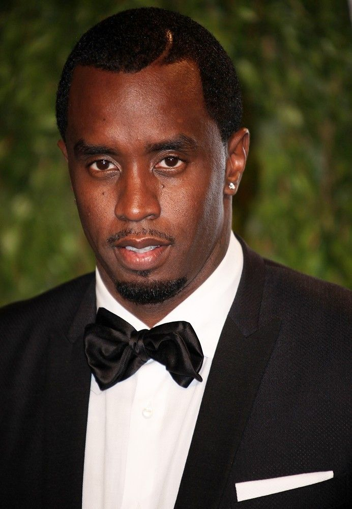

P. Diddy
P. Diddy, vlastným menom Sean Combs (tiež známy ako Puff Daddy, Diddy alebo Love), je americký rapper, producent, podnikateľ a módny návrhár, ktorý je jednou z najvplyvnejších osobností v histórii hip-hopu. Narodil sa 4. novembra 1969 v New Yorku. Preslávil sa najprv ako producent v nahrávacej spoločnosti Uptown Records, kde pracoval s umelcami ako Mary J. Blige. V roku 1993 založil vlastné vydavateľstvo Bad Boy Records, ktoré objavilo hviezdy ako The Notorious B.I.G., Faith Evans či Mase. Po smrti B.I.G. v roku 1997 vydal svoj debutový album No Way Out, ktorý obsahoval hit „I’ll Be Missing You“ – poctu zosnulému priateľovi. Okrem hudby sa presadil aj ako úspešný podnikateľ. Vybudoval módnu značku Sean John, vstúpil do sveta alkoholu (značka Ciroc) a stal sa multimilionárom. Je známy svojim luxusným životným štýlom, vplyvom v zábavnom priemysle a schopnosťou pretvárať trendy. Počas kariéry niekoľkokrát zmenil umelecké meno (Puff Daddy → P. Diddy → Diddy → Love), čo sa stalo súčasťou jeho mediálneho imidžu. Aj keď dnes už nie je tak aktívny ako rapper, stále má obrovský vplyv ako producent, mentor a kultúrna ikona.
Späť na hlavnú stránku